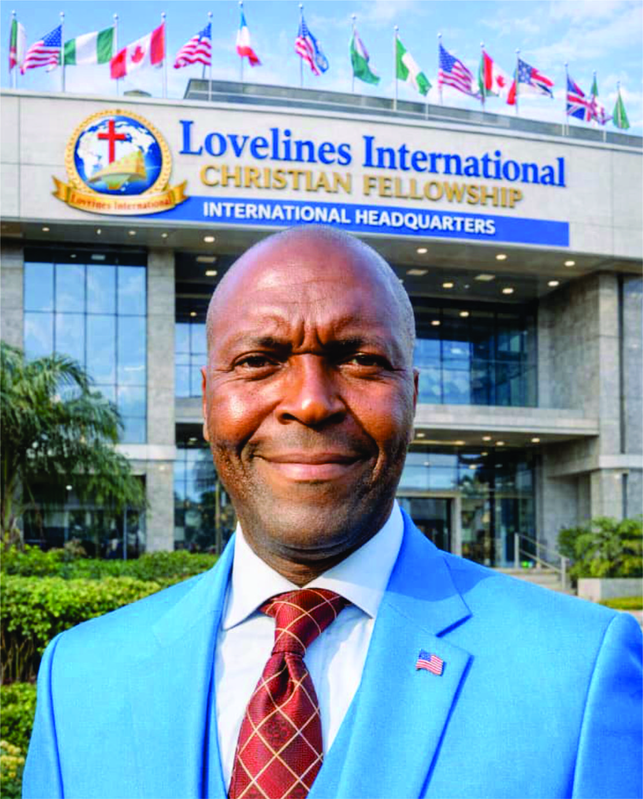
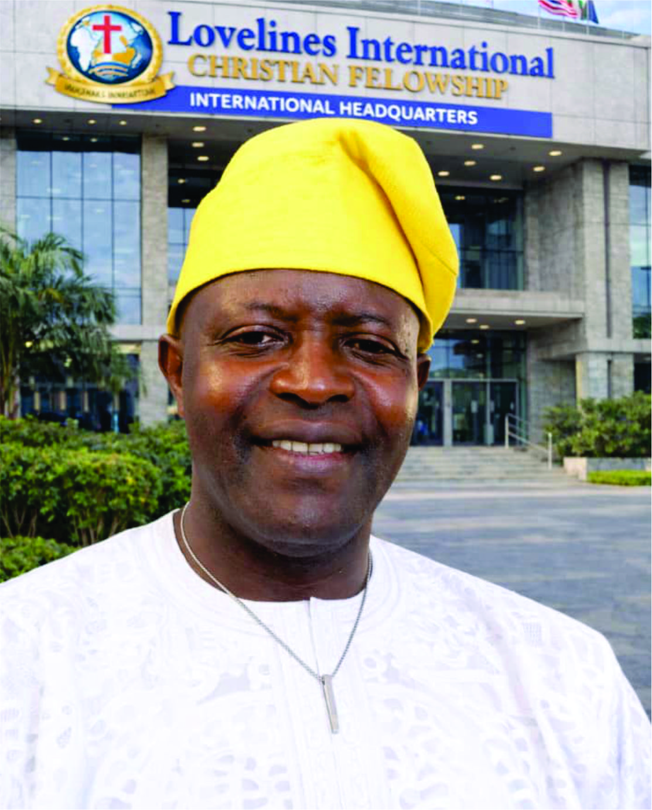
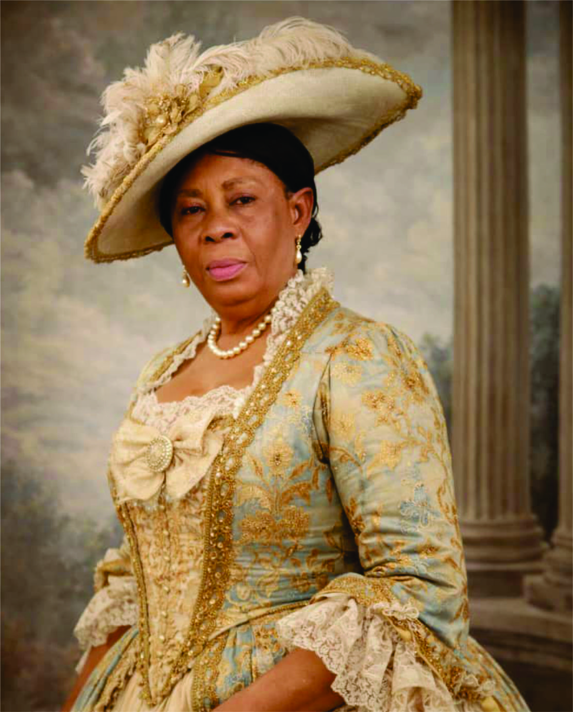
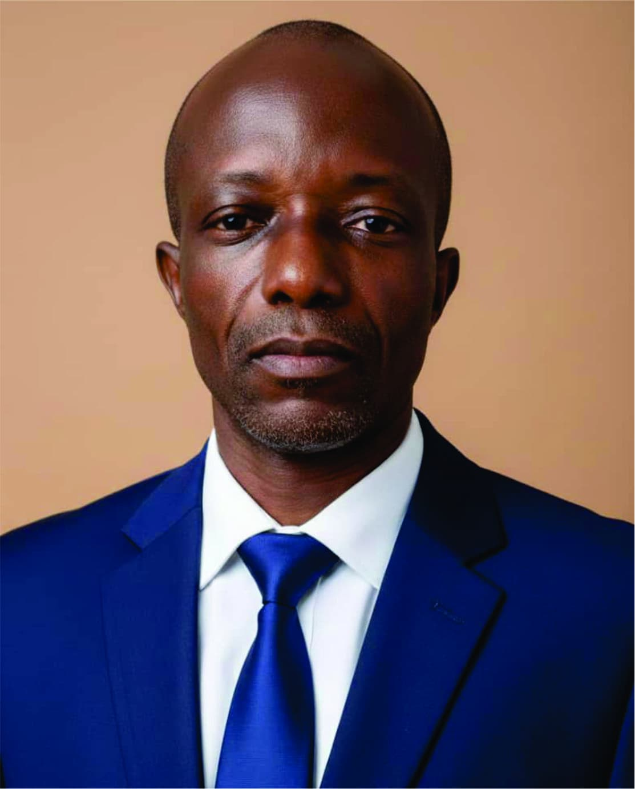
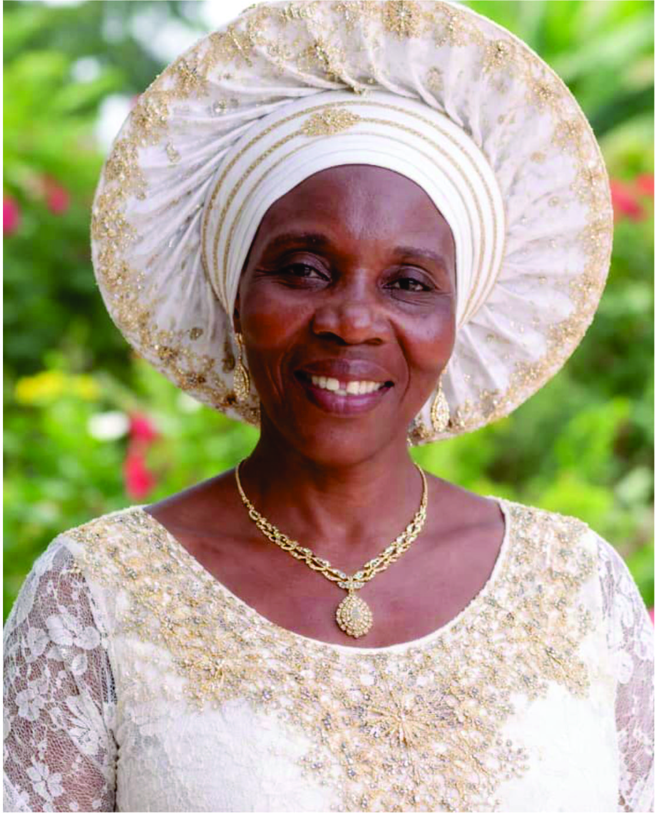
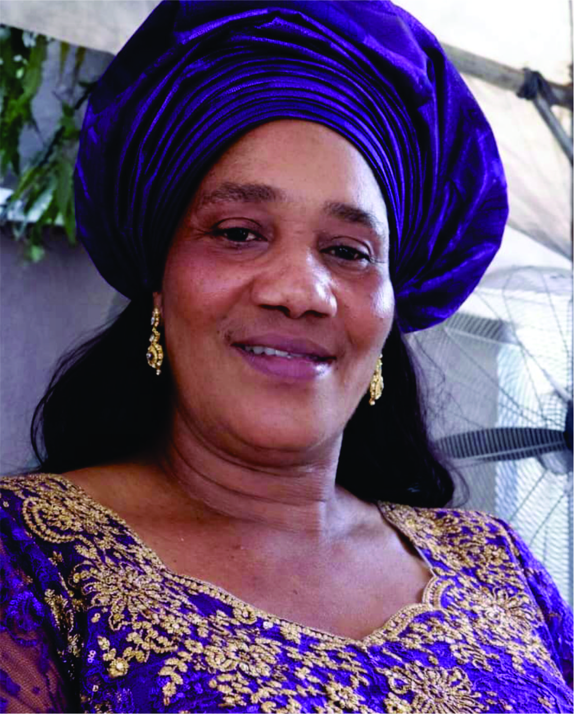
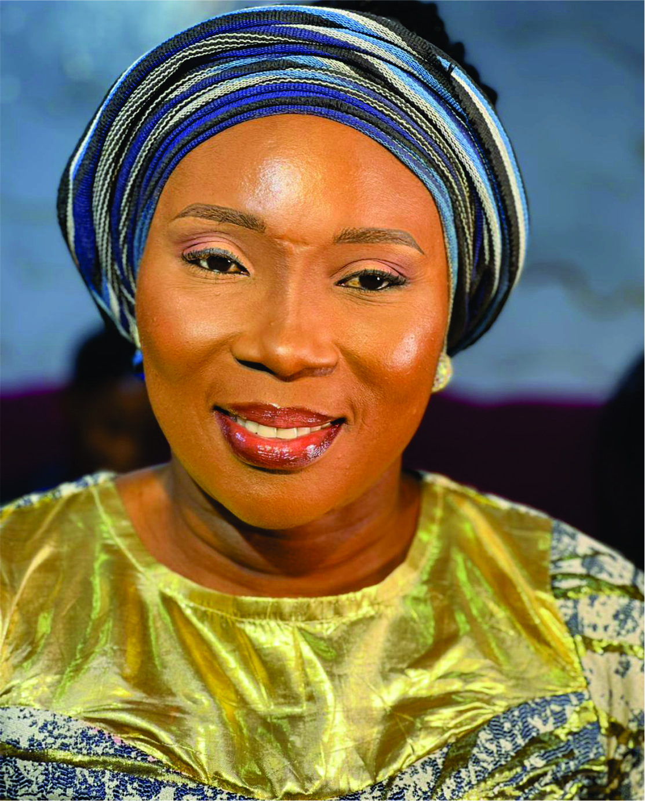

Our Leadership Team

Rev. Evang. Dr. Kingsley Dike
National President & Coordinator GeneralA distinguished Christian leader and humanitarian. He is the founder of Jesus Army Ministries and Life National President of Lovelines Nigeria.

Dr. Felix Dike, FCA
Vice President & Int'l Director of ProgramsA seasoned Chartered Accountant and Chief Accountant at De Young Motors, blending professional excellence with spiritual depth.
Prof. Chibuzor Thomason Chimezie
National Secretary & 2nd Vice PresidentA prophetic minister and spiritual leader of The Risen Christ Rhema Global Assembly, dedicated to apostolic leadership.
Rev. Dr. Tonia (BA, MCE, M.Ed)
Prophetic Teacher & CounselorA teacher by training and divine calling, specializing in healing hearts and supporting single parents and children.

Rev. Dr. Mrs. Christiana Maimuna
International Women Affairs DirectorPresident of God's Assembly Bible Church, leading initiatives for the empowerment of women and care of widows.

Bishop Prof. Segun F. Sogbamu
National Director of Programs & EventsA theologian and academic professor, serving as the Proprietor of Kosem International School.

Apostle Amb. Mrs. Chinasaokwu C. Chimezie
Director of ProtocolA Computer Technology graduate managing official engagements and organizational protocol with excellence.

Rev. Amb. (Mrs.) Salvation Esther Ngozi
Director of Prayers & Spiritual MattersMissionary Evangelist focused on intercessory leadership and women's spiritual empowerment.

Pastor Mrs. Esther Mbakwe
Int'l Ambassador to Government & CorporateA certified medical practitioner and realtor fostering strategic partnerships for humanitarian impact.
Engr. Chimezie Joseph Chimeremeze
Director of Social and MediaMechanical Engineer and digital expert managing global media strategy and public engagement.